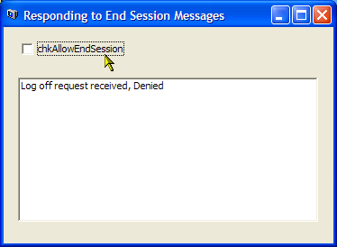

VB5 Query End Session Sample (10K)
VB5 Query End Session Sample (10K)
 VB6 Query End Session Sample (10K)
VB6 Query End Session Sample (10K)
 2 Jun 2004
2 Jun 2004
First Posted
 How to Shutdown the System in Windows 9x and NT
How to Shutdown the System in Windows 9x and NT
 Subclassing Without The Crashes
Subclassing Without The Crashes

Preventing Logoff or Shutdown
Respond to the WM_QUERYENDSESSION to control inappropriate log-offs
Sometimes if an application is performing a long operation you do not want the user to log-off or shutdown the system until it is complete. An example is when burning a CD, as the CD burn will be terminated and the disc potentially ruined. This sample demonstrates how to respond to the WM_QUERYENDSESSION message to prevent this from occurring.
About WM_QUERYENDSESSION
The WM_QUERYENDSESSION is sent to the top level Window of each application when the user chooses to end a session by either logging off or shutting down Windows (or if a programmatic request to shutdown the system is made). By default, applications return 1 in response to this message, however, if you return 0 then the session is not ended and the system will stop sending the message to any other application.
Note that your application needs to respond to the message loop for this technique to work. That means that the long operation must be non-blocking, otherwise if Windows sends the WM_QUERYENDSESSION but does not get a timely response it will attempt to kill your application after a short delay anyway. Another thing is that you cannot (for example) put up a dialog or MessageBox here asking the user what to do: if you do Windows will again see that it doesn't get a timely response and will kill your application.
In VB
To respond to this in VB, you need to install a subclass on your applications top-level Window(s). As usual, this sample uses the Subclassing and Timer Assistant to achieve this. Here's the code:
Private Const WM_QUERYENDSESSION As Long = &H11
Private Const ENDSESSION_LOGOFF As Long = &H80000000
Implements ISubclass
Private Sub Form_Load()
AttachMessage Me, Me.hWnd, WM_QUERYENDSESSION
End Sub
Private Sub Form_QueryUnload(Cancel As Integer, UnloadMode As Integer)
DetachMessage Me, Me.hWnd, WM_QUERYENDSESSION
End Sub
Private Property Let ISubclass_MsgResponse(ByVal RHS As SSubTimer.EMsgResponse)
'
End Property
Private Property Get ISubclass_MsgResponse() As SSubTimer.EMsgResponse
ISubclass_MsgResponse = emrPreprocess
End Property
Private Function ISubclass_WindowProc( _
ByVal hWnd As Long, _
ByVal iMsg As Long, _
ByVal wParam As Long, _
ByVal lParam As Long) As Long
Dim lR As Long
If (iMsg = WM_QUERYENDSESSION) Then
If (lParam Or ENDSESSION_LOGOFF) = ENDSESSION_LOGOFF Then
' user logging off
Else
' shutdown
End If
lR = 1
' Return 0 to prevent the session being ended,
' otherwise return 1:
ISubclass_WindowProc = lR
End If
End Function
Wrap Up
This sample demonstrates how to prevent a Windows session from being ended by log-off or shutdown, which can be useful if your application is performing an operation that would otherwise result in data being corrupted.